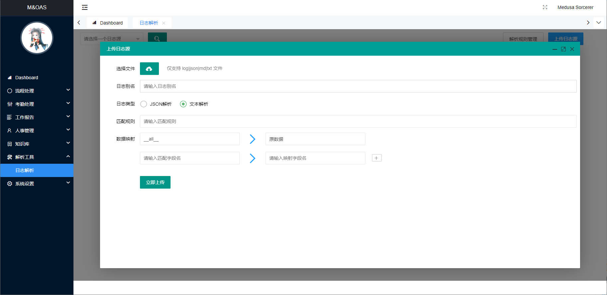
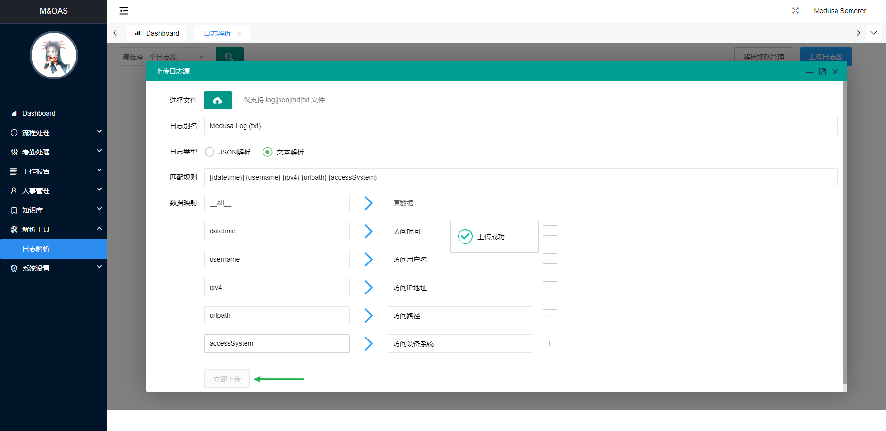
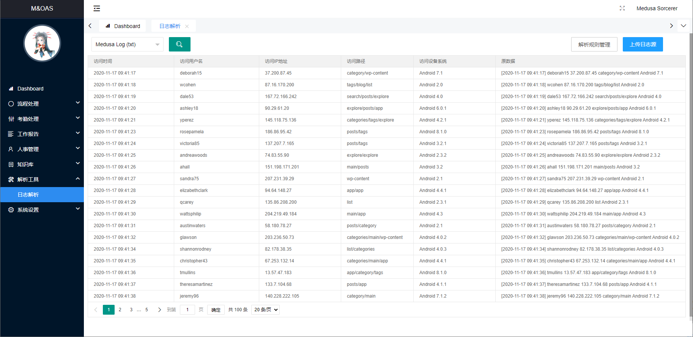
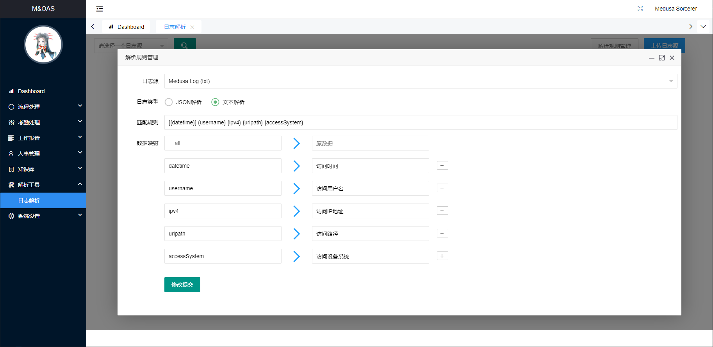

M&OAS 日志解析
日志解析在当前版本
v1.4.0中暂只支持可视化，不具备查询、联合分析的功能，当然后面的版本中会实现该方式进行联合分析，敬请期待！
日志可视化具备两种解析方式：
- 正则解析：使用 Python-parse 语法进行解析
- JSON 解析：导入标准的 JSON 格式日志进行解析
你需要注意的是：
- 正则解析并不是使用的正则语法，而是 Python-format 的语法进行反解析
- 正则解析的标准单位是一行数据，一行数据为一个解析单位
- JSON 解析需要使用数组嵌套的方式返回，因为后端解析仅仅是将 JSON 序列化成 Python-Dict 对象后进行切片返回
- 上传文件的格式限制为：
.log、.json、.md、.txt

解析示例
拟有如下格式的日志文件：
[2020-11-17 09:41:17] deborah15 37.200.87.45 category/wp-content Android 7.1
[2020-11-17 09:41:18] wcohen 87.16.170.200 tags/blog/list Android 2.0
[2020-11-17 09:41:19] dale53 167.72.166.242 search/posts/explore Android 4.0
[2020-11-17 09:41:20] ashley18 90.29.61.20 explore/posts/app Android 6.0.1
解析日志的格式是：[时间] 用户名 访问IP 访问路径 访问设备系统。
此时使用平台进行可视化。
- 解析规则：
[{datetime}] {username} {ipv4} {urlpath} {accessSystem} - 数据映射如图，等待上传成功 
使用主界面的下拉框选择上传的名称并点击搜索按钮，将进行数据解析并返回至可视化界面：

当你需要修改解析配置时可以点击【解析规则管理】按钮进行编辑修改：

数据最大保存 7*24 小时，如果你想延长你的保存时间，请使用【解析规则管理】对你想延长保存时间的数据进行无状态修改，即不修改任何数据进行修改提交，数据将重新计算为修改时刻到 7*24 小时之后。
解析规则说明
需要解析的数据用 {} 包裹并使用规范的 Python 标识符命名规则命名：{medusa}。
如匹配 The knights who say Ni! 中的 knights 和 Ni 则使用 The {params1} who say {params2}!，则 params1=knights、params2=Ni。
你还可以使用更复杂的方式。
在对规则进行定义的时候, 可以使用以下格式进行自定义输入规则下对应的字段映射以及特殊规则匹配属性：
{[fieldName]:[formatSpec]}
fieldName：字符名称, 必须符合 Python 标识符命名规则formatSpec：匹配的规则属性, 详见下文
| 规则类型 | 说明信息 | 输出类型 |
|---|---|---|
l |
字母 | str |
w |
字母、数字、下划线 | str |
W |
非字母、数字、下划线 | str |
s |
空白字符 | str |
S |
非空白字符 | str |
d |
有效整数 | int |
D |
非数字 | str |
n |
带有千位分隔符的数字 | int |
% |
百分比 | float |
f |
定点数 | float |
F |
小数 | Decimal |
e |
具有指数的浮点数, 例如 1.1e-10，NAN |
float |
g |
通用数字格式(d、f、e) |
float |
b |
二进制数 | int |
o |
八进制数 | int |
x |
十六进制数字 | int |
ti |
ISO8601 格式的日期/时间, 例如 1972-01-20T10:21:36Z（T、Z 可选) |
datetime |
te |
RFC2822 电子邮件格式日期/时间, 例如 Mon, 20 Jan 1972 10:21:36 +1000 |
datetime |
tg |
Global (day/month) 格式日期/时间, 例如 20/1/1972 10:21:36 AM +1:00 |
datetime |
ta |
US (month/day) 格式的日期/时间, 例如 1/20/1972 10:21:36 PM +10:30 |
datetime |
tc |
ctime() 格式日期/时间, 例如 Sun Sep 16 01:03:52 1973 |
datetime |
th |
HTTP 日志格式日期/时间, 例如 21/Nov/2011:00:07:11 +0000 |
datetime |
ts |
Linux 系统日志格式日期/时间, 例如 Nov 9 03:37:44 |
datetime |
tt |
时间, 例如 10:21:36 PM -5:30 |
time |